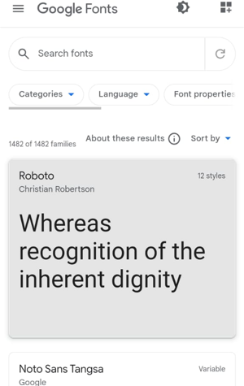
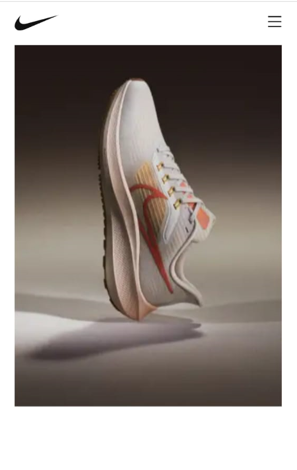
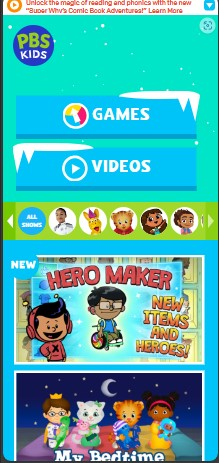

Clean Design
Google Fonts API

Clean design is mostly due to the fact that all of the fonts are separated into boxes with spacing between them, which makes it more straightforward.
Google Fonts API makes good use of whitespace, resulting in a clean design. The spacing between all of the components allows visitors viewing the page to remain calm while searching for a typeface.
Contrast
Nike's

Contrast is when two or more very different (opposite) elements are placed together on the page. It can aid in legibly improve visual interest, organization and hierarchy and highlighting the main message.This Nike Sports Wear advertisement is a good example of contrast with the use of opposite colors and textures. This image features various colors that contrast, making the shoe "highlight" to attract the viewer's attention.
Repetition
PBS Kids

The Principle of Repetition is applied when the same or similar elements are used throughout a design. It portraits a sense of harmony and consistency.
PBS KIDS home page is a perfect example of repetition in design. The logo's circle shape is also utilized on the icons throughout the site.